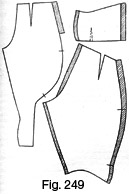
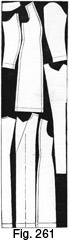

Early 1940's—Ladies' Garment Cutting and Making
by
F. R. Morris
Chapter XVIII—Inlay Provision—Economical Layouts and Cutting from the Material
THE matter of inlay allowances is governed by the method of making and whether one or more try-ons are necessary. For a cut-to-finish garment, inlays are cut down to a minimum, while, if a try-on is needed, inlay allowances may be left round the most important seams to make provision for possible alterations. Inlay provision also governs the layout of the garment pattern on the material preparatory to cutting out. Laying a pattern out on the material becomes a matter of practice; one instinctively learns how to place the various sections of the pattern in rotation to the best advantage. There are definite layout sequences in use, but the able cutter does not adhere slavishly to any particular method, for the knowledge of different layouts and the ability to switch patterns about are very useful when assorted lengths of material are provided from which garments are to be cut.
As previously stated, the provision of inlays and turn-ups has an influence on the material layout. In the wholesale trade, where such inlays are reduced to a minimum, less length of cloth is allowed than in the case of the retail "measure" trade, owing to the necessity for ample turnings for the contingency of possible alterations of style and fit.
With the cutting of a special pattern to the customer's requirements, laying-up of the various sections of the pattern on the material becomes simplified, and one can proceed in a definite sequence. In the event of the garment being cut out direct from the cloth by means of a stock pattern, it is still necessary to work in a definite order and cut out each section of the garment as we proceed.
Before going on to describe the laying out of patterns on the material it will be necessary to decide the matter of inlay allowances for various garments.
The three definite jacket and long-coat styles are the plain one-seam coat, the two-seam or sidebody coat, and the three-seam or panelled coat. The allowances for inlays necessary to each of these three styles remain the same if the number of seams decrease or increase by the addition of a forepart or back of one style to the back or forepart of another.
Inlay Provision for a Plain One-seam Coat
 Firstly, we will deal with a plain one-seam coat. The inlays allowed are
the same for a long coat as for a short jacket and are indicated by Fig.
238.
Firstly, we will deal with a plain one-seam coat. The inlays allowed are
the same for a long coat as for a short jacket and are indicated by Fig.
238.
The back part has a ¾-inch inlay across the back neck curve to allow for any possible raising of the collar height in the neck. This inlay also forms a support to the collar when sewn by hand and should never exceed ¾ inch in height, otherwise it will tend to tie the neck and shoulders of the coat into creases and make the neck finish very thick and clumsy. The shoulder seams also should be sewn out to the commencement of this inlay only and not right through to the end as is the practice sometimes.
The other inlay on the back part is across the bottom edge. Here an addition to the length is made of 1 inch to 1½ inches. A point to remember is the run of the sideseam above the bottom edge. If the sideseam slants back from the edge in a sharp angle or run, the inlay must be tapered back to agree with the sideseam run, so that when turned up the width of the inlay edge is not longer than the actual width of the back at the same distance up from the bottom edge. This checking up of the inlay width may be only a small detail, but it undoubtedly prevents a good deal of manipulation and shrinking of the turn-up which cannot be obviated if the inlay is not tapered.
The double-breasted or single-breasted forepart for a skeleton try-on has ¾-inch inlays allowed all round the shoulders, down the gorge to the crease line and round the scye from the shoulder seam to within 3 inches of the front pitch. The scye inlay is "stepped" to the scye seam, where it terminates. The author appreciates that there are cutters who disapprove of this point, but, having personally cut and made hundreds of coats, he likes to know where an inlay ends, especially round the scye. Inlays that taper away to nothing are a curse to machinists and tailors when basting and sewing in the sleeves. Either the tack marks have been brushed out and consequently they are without a definite sewing line round the scye or else the inlay has become a part of the shoulder and the back shoulder width has been adjusted to suit the end of the front shoulder and inlay.
The author does not allow more than ¾ inch round the shoulder; a coat that requires more than ¾ inch of adjustment after the first cut and fitting must be radically faulty elsewhere than in the shoulders alone. Also, an allowance of ¾ inch at the gorge and the front of the scye provides for 1½ inches of adjustment in the shoulder balance, which should be sufficient for every need. With the neck-point location as decided by the author's system drafts, it is very doubtful whether this inlay provision will ever be used to vary the shoulder balance. Having a faith in his cutting, the author very rarely leaves this inlay, believing that the majority of shoulder troubles, apart from a definitely incorrect balance, are due to faulty making-up of the shoulders by the back shoulder not being eased on to the front shoulder.
The position of the neck point from the front of the scye also influences the presence of creases in the shoulders. The fallacy of cutting garments with receding neck points and trusting in the ability of the tailor or tailoress to draw the crease line in to form a breast effect and bring the neck point more forward is the most fruitful cause of shoulder troubles. One cannot rely on the correct manipulation going into the shoulder, and it is very much better to cut a shoulder to take a natural lie on the figure without the necessity for a lot of working-up of the crease line. In any case, this extreme manipulation is not required by women in their garments these days, and the keen minds among cutters realize that they must cut their garments to fit without the aid of the work hand. In the old days it would be disastrous to cut a shoulder as we do to-day, for with the manipulation tailors infused into the shoulders then our straight-cut shoulder would become inches too short. To counteract such excessive manipulation, cutters in the past had to draft the shoulders of their coats with a long front shoulder and a crooked or receding neck point. Only by doing this were they in any way sure of having something approaching a normal shoulder after the working-up process was finished. To-day the majority of such manipulation has been eliminated, and the cutter can draft a shoulder to fit the figure with the knowledge that a great deal of manipulation will not ruin his efforts.
At the sideseam, an allowance of ¾ inch to 1 inch is added equally all the way down. This inlay should be well stretched in the waist hollow to prevent any tying of the seam.
The bottom edge has an addition made to correspond with the similar inlay at the bottom edge of the back part and is tapered back to match the run of the sideseam at a similar distance up from the bottom edge where the inlay turns back.
For a skeleton baste, it is usual to leave on a certain quantity down the front edge and revers, which is basted back and left in reserve for letting out if the fronts make up too narrow. The actual shape of the lapel is only drafted very roughly and the finished shape is marked in after the fitting.
Inlays are supplementary to good cutting. Every garment should be cut as though a try-on were impossible and the leaving of countless inlays is suggestive of an inferiority complex and a lack of faith in one's own cutting abilities. The author always endeavours to eliminate inlays as much as possible, for a cleaner-finished garment is achieved by doing so; in any case, inlays left should be trimmed down to a minimum after the garment has been fitted and pronounced satisfactory. The very presence of an inlay is conducive to tampering with a seam or a section of the garment which otherwise would be left well alone. With good measuring and accurate cutting, we can cut close to the "bone" as it were, and eliminate many of the inlays formerly considered to be necessary. In the bespoke trade the author has seen coats cut out on which one could not see the coat for the inlays! He puts this down to the habit of tailors and cutters of adhering to established methods and a reluctance to vary their habits one iota.
The shoulder dart may also be utilized as an inlay if it is sewn out without the cloth between the two dart lines being cut away. If cut through before being sewn out, the dart should be cut down a ¼-inch seam inside the drafted line at the front of the shoulder, and then a marking thread placed a seam in front of the back seam of the dart. The edge of the seam at the front is placed against the marking threads at the back of the dart, and the machinist sews a ¼-inch seam behind the edge of the dart seam and the marking threads in the original drafted dart lines.
For a single-breasted cut-away front jacket, the inlay should be "stepped" to the bottom edge line as indicated by Fig. 238, and then the facing is cut to cover the "step."
THE SLEEVE INLAYS
The sleeve inlays in Fig. 239 are confined to the hindarm of the under-sleeve and to the bottom edge of the sleeve at the cuff. The question of the cuff finish is the governing factor in the additions made to the sleeve length.
For the plain cuff sleeve, allow the usual 1½ to 2 inches as indicated by Fig. 239 (A) at the bottom edge of the sleeve, making sure that the width of the inlay agrees with the width of the sleeve at the position on the sleeve to which it turns back.
Fig. 239 (C) indicates the inlay allowance for an opened cuff finish. The standard inlay as described or the plain sleeve has an additional quantity allowed at the hindarm to the turn-up, equal to the length of the opening plus ½ inch to hold the vent tack. Often, for these cuffs, the addition is supplemented by a piece of Italian cloth or lining added to the usual inlay in place of the cloth extension. This variation is for the sake of a thin finish to the sleeve opening.
For a "dummy" or "sham" opened cuff, the usual inlay is added to the sleeve length, and then a small inlay is added at the sideseam of the sleeve long enough and wide enough to take the number of buttons required as shown by Fig. 239 (B). This sideseam inlay is turned in before the sleeve end inlay is turned up, and, when the hindarm seams are sewn together, the front bottom edge inlay is lapped over the hind-arm sleeve end inlay to form an opening held in position by the buttons.
THE UNDER-SLEEVES
The under-sleeves are cut with a ¾-inch inlay down the hindarm of the sleeve with the same bottom edge inlay added as for the top-sleeve shown for the plain sleeve finish by Fig. 239 (D).
Fig. 239 (F) has identical inlay provision as described for Fig. 239 (C) with the extension as added for the top-sleeve at the hindarm seam to take the vent tack.
The inlay provision allowed on the under-sleeve for a "sham" opening is the same as for a plain cuff indicated by Fig. 239 (E).
This completes the description of the necessary inlay provision for a plain jacket or coat with a side-seam only.
Inlay Provision for a Sidebody Jacket or Long Coat (Fig. 240)
Fig. 240 shows the addition of inlays to a sidebody jacket or long coat.
The back part has the usual ¾-inch inlay round the back neck curve and 1 inch to 1½ inches at the bottom edge on the complete length.
The sidebody seam where it joins to the back part has an addition of ½ inch to ¾ inch all the way down as indicated. The inlay across the bottom edge is tapered if the seam runs are acute in angle. This inlay at the top of the sideseam should be "stepped" to indicate definitely the commencement of the sideseam. The forepart inlays are as usual round the shoulder seam, the gorge and the scye seam as indicated, while, at the sideseam and bottom edge, a similar quantity is left on as for the plain coat. Allow ¾ inch down the front edge for a skeleton baste.
Inlay Provision for a Panel Coat (Fig. 241)
Allow the usual ¾-inch inlay across the back neck curve and 1½ inches at the bottom edge.
At the panel seam of the sidebody section, allow ¾ inch all the way down from the shoulder seam to the bottom edge as indicated and if inches extra to the length.
Taper the inlay back as shown, so that when the inlay is turned up there will not be an excess of material to be shrunk or otherwise removed.
The side front section has the usual ¾-inch sideseam inlay and ¾ inch across the shoulder seam and round the front of the scye to within 3 inches of the front pitch.
At the panel seam allow ¾ inch extra to provide for any variation of the neck point or increase of bust prominence; 1½ inches are allowed at the bottom edge.
The fronts have the usual ¾-inch inlay allowed at the shoulder seam and round the gorge, and 1½ inches at the hem line, "stepped" to take the front facing.
This completes the description of inlay provision for plain, sidebody and panelled coats, and in all instances where the design of the garment resembles the above seam constructions, identical inlays must be provided for a try-on and making-up.
Long coats are cut with similar inlay provisions, so that it is not necessary to illustrate these variations.
Skirt Allowances of Inlays for Making-up
Fig. 242 illustrates the back and front of a plain skirt pattern, with the usual inlays indicated.
At the sideseams, back and front, an allowance of ¾ inch to 1¼ inches is made for the plaquet side fastening. It is advisable to make this allowance all down the sideseam to give a firm foundation to the plaquet fastening and to obviate unnecessary neatening-off of the seams.
At the hem line it is usual to allow from 2 to 3½ inches for the turn-up. This quantity is a reserve for lengthening and assists the "hang" of a straight-cut skirt.
The back waist darts are sewn out without being cut down, to provide a means of increasing the waist size of the finished skirt without altering the plaquet.
Inlays for a Gored Skirt (Fig. 243)
The popular gored skirt showing a slightly flared hem line has a rather different inlay allowance in comparison with the plain straight-hanging skirt. In this case we have to consider the hang of the hem line first, for wide inlays tend to upset the easy flaring of the hem. It is not advisable to allow any inlays down the front or back panel seam for this reason, and the bottom edge turn-up is kept as narrow as possible so as not to make the hem too stiff. It is not incorrect to allow only just sufficient on the length to allow for the bottom edge to be hem-stitched and then turned up a seam and machine-stitched. This method of finishing the hem is very often used for dresses in order to make a thin edge.
Fig. 243 indicates the usual sideseam inlays of 1¼ inches for the side plaquet fastening, and at the hem 1 inch has been allowed as indicated, the side-seams of the inlay tapering back to match the seam runs above. When skirts of this description are being made, care must be taken not to stretch the seams when machining-up, and it is always advisable to re-mark the bottom edge run before turning up the hem.
Panel skirts without a hem-line flare have similar inlays allowed, while skirts with inverted or knife pleats have inlay allowances made according as to whether the pleats are allowed from the waist line or stepped out from the seam in their actual required positions.
Inlay Allowances for Raglan Coats (Fig. 244)
Fig. 244 indicates the usual inlays cut on a raglan coat when laying-up on the material. If the coat is required with stitched or lapped seam sleeves and sideseams, additional provision must be made by inlays to take the stitching.
The draft indicates a single-breasted raglan with double-breasted lapels and a gorge dart.
The centre back is cut on the fold of the material or, if it is a seam back, the sewing seam is indicated by the pattern edge as no allowance for a seam at this part is made in the basic drafts. Mark at the back neck curve the usual ¾ inch inlay to which to sew the under-collar, and, if the sleeve is to be stitched down to the back part, allow ¾ inch down the back shoulder seam to 1½ inches below the back pitch mark as it is not customary to lap the sleeve seams underneath the scye.
One and a half inches for the bottom edge turn-up are allowed as indicated.
The forepart has a 1 inch allowance at the sideseam and ¾ inch down the front raglan shoulder seam and round the gorge to the crease line of the revers. The shoulder inlay is only added when the seams are lapped throughout.
Add 1½ inches at the bottom edge.
Three-piece and One-piece Raglan Sleeve Inlays (Fig. 245)
Fig. 245 (a) shows the inlays added to a three-piece raglan top-sleeve. At the apex of the sleeve horns back and front, ¾ inch must be added to agree with the ¾ inch allowed round the back neck curve and the front gorge.
Allow ½ inch down the back part of the top-sleeve if the over-shoulder sleeve seam is to be stitched; in any case, make this addition to provide for any adjustment of shoulder fitting.
Add 1½ to 2 inches at the bottom end of the sleeve for a turn-up.
The under-sleeve has inlays as indicated by Fig. 239 (E), so that it is not necessary to repeat the description.
For two-piece sleeves, either with a seam over the shoulder and under the arm or seams at the fore and hindarm, the ¾-inch allowance at the apex of the sleeve horns is added, and at the underarm seam allow ¾ inch to 1 inch as indicated by the one-piece sleeve inlay provision shown in Fig. 245 (b).
In the one-piece sleeve in question, the ¾-inch shoulder inlay has been omitted. Allow as for the three-piece sleeve.
If a gauntlet cuff is included in the sleeve design, the sleeve end inlay is dispensed with, and the sleeve cut to net length.
The shoulder dart in the one-piece sleeve style need not be cut out as it serves as a useful inlay provision for increasing the length of the front balance.
Inlay Provision for Trousers, Shorts, Plus-fours, Ski-ing Trousers, Breeches, and Jodhpurs
Inlays may be divided into two classes, namely, those that are inlays pure and simple and left to make provision for adjustments of size in the finished garment, and those which serve a useful purpose by being suitable for pocket facings or side opening facings. In the latter class may be included the side-seam inlays added to skirts and the sideseam inlays allowed on trousers or similar garments.
Inlay Provision for Trousers (Fig. 246)
For trousers cut with a waistband, allow a sideseam inlay 6 inches in length and 1¼ inches wide for the sideseam plaquet fastening. This allowance should be added at the left side for single-fastening trousers and the waistband carried round in one continuous piece from the left sideseam to the right side-seam. When the trousers are cut up to the top without a waistband, the opening allowance must be at least 7½ inches in length.
Trousers with a plain bottom finish have an addition to the length of 1½ to 2 inches according to the width of the bottoms. It is advisable to allow a wide turn-up to give weight to the bottoms if they are cut very wide.
The undersides are indicated by Fig. 246 (b). At the sideseam add 1¼ inches for the button-stand of the side opening and as a backing if the sideseams are stitched over.
The seat seam has ¾ inch allowed from the waist seam to within 2½ inches of the back fork point; the inlay then tapers away to nothing so as not to restrict the fit of the trousers at this section. As a means of increasing or decreasing the waist or seat size in the finished garment, this inlay is not of much utility Unless the waistband at this point in the centre back is cut through and has a similar inlay provision.
The inside leg seam usually has a ¾-inch inlay added as a means of letting out the knee and bottom width and also for any adjustment of the fork and stride-room. If the trousers have a tendency to show diagonal creases from the legs forward in walking, letting out of the back fork inlay will give more freedom, and for adjustment of the knee and bottom widths it is much more practical to utilize this seam than to make the variation at the sideseam with consequent interference with the sideseam shape over the hips.
For P.T.U. bottoms add twice the width of the turn-up required at the bottom edge plus ¾ inch for turning up inside the legs. This is indicated on the draft by markings of 2 inches, 2 inches, and ¾ inch.
This completes the trouser inlays. A point to note is to cut the waistband long enough to match the front and back sideseam inlays in addition to the actual waist circumference.
Inlay Provision for Shorts (Fig. 247)
Inlays allowed on shorts when cutting from the material are identical with those added for trousers, i.e. 1¼ inches for the sideseam fastening at the front and back and ¾ inch down the seat seam to taper away to nothing 2½ inches from the back fork termination. Add ¾ inch down the inside leg seam and 2 inches at the bottom edge for the turn-up. Occasionally, ladies' shorts are made with P.T.U. bottoms; the addition is then made as indicated for trousers.
For pleated shorts, the seat seam inlay cannot be allowed as it will tend to make the garment very thick and clumsy after the inverted pleat has been pleated over at the centre back seam.
Inlays for Plus-fours and Ski-ing Trousers (Fig. 248)
The standard inlays added for plus-fours are identical with those necessary for ski-ing trousers. The front sideseam has 6 inches by 1¼ inches added for the side plaquet fastening, and at the bottom edge of the legs a small vent of approximately 4 inches is left open. To face the vent, allow 4½ inches by 1¼ inches as an addition on the sideseam.
The undersides have 1¼ inches added down the sideseams to form the button-stand of the side opening and at the bottom edge to face back the side of the vent.
Three-quarters of an inch is added down the seat seam in the usual manner, tapering away to nothing 2½ inches from the back fork.
Three-quarters of an inch is added from the fork to the bottom edge on the inside leg seam.
As stated, ski-ing trousers have similar inlays, but, if the bottoms are gathered into a band of knitwear as they sometimes are, it will not be necessary to leave a sideseam vent as the garment should pass over the boot quite easily as the knitwear stretches.
Inlay Allowances for Riding Breeches and Jodhpurs (Fig. 249)
For breeches cut up into the waist line without a waistband and showing a sideseam plaquet fastening, allow a 1¼-inch inlay at the front left sideseam 7½ inches in length. It is always advisable to make the side-seam opening of ample length if only one side of the garment unfastens, and the stipulated length may be increased up to 9 inches, while very often the breeches have openings at both sideseams.
On the undersides, allow ¾ inch down the seat seam and ¾ inch down the inside leg seam to where the gore seam splits the undersides of the knee, small and calf sections. One and a quarter inches are allowed for the usual sideseam inlay to take the side-opening buttons, also to provide a means of increasing the "bell" shape at the sides, and as provision for increasing the width of the breeches at the knee.
The under section of the breeches below the gore seam has a 1¼-inch inlay provided at the sideseam to form a button-stand for the front knee-opening buttons, or to turn back and form a facing if the knees are laced for fastening.
The inside leg seam has ¾ inch allowed for letting-out purposes to agree with the inlay added down the inside leg seam above the gore.
Jodhpur breeches have similar inlays to riding breeches, though the sideseam inlay may be eliminated below the side-opening level, as these garments do not fasten at the knee by buttons or laces. On the other hand, a small vent is left at the inside leg seam to enable the rider to pass her boot through the bottom opening without straining the seams. This vent is fastened with a hook and eye, or a wide piece of elastic may be stretched across the opening from the front to the back. As previously stated, another method is to insert a piece of whalebone for stiffening at each seam, while other jodhpurs are shown with the popular zip-fastener closing the vent. A small addition must be made for the vent on the inside leg seam of the topsides, about 4 to 4 ½ inches in length.
For P.T.U. bottoms, add 4½ inches to the drafted jodhpurs length.
ECONOMICAL LAYOUTS AND CUTTING FROM THE MATERIAL
There are no infallible methods of laying-up patterns on the material, but most cutters have one way of doing this to which they generally adhere. It is curious to observe the various ideas of material lengths required for different garments when talking to other cutters, and the diversity of opinion is due no doubt to the many pet layouts of personal choice.
To make a garment layout for a small size of figure would serve no useful purpose, and the author's plan will be to illustrate suitable close layouts for medium-size figures and then indicate the increase and reduction of material lengths for larger and smaller figures.
With cut-about designs no specified methods of laying-up the pattern on the cloth can be indicated as a standard rule, but practice usually shows the most economical way and one becomes adept at switching patterns about to the best advantage.
A short lay, though saving a few inches on the length, may not necessarily be a good layout if the facings are pieced and the inlays skimped to a minimum. It is much better to err on the easy side and order sufficient material to eliminate uncertainty of mind as to whether the garment can be cut out satisfactorily.
When commencing to lay a pattern out on the material, examine the length for faults, which are usually marked by a string on the selvedge. Also examine the run of the design to see if it has become twisted in the drying process after shrinking. Very often check materials are stretched away from the square in this manner and it is important before cutting to make sure that the grain of the cloth is level from the selvedge to the fold edge.
For materials with alternating stripes or checks, lay the pattern pieces all the same way of the cloth; this applies also to faced cloths or any weaves with a "way of the wool." The under-collar is the only part that is not laid on the straight of the material; all other sections are laid on the direct straight, except when the design of the garment indicates bias cutting.
The layouts shown will not indicate small fittings such as pocket jeattings, etc., but the front facing, top- and under-collar will be provided for.
Layout for a Plain Double-Breasted Costume (Fig. 250)
The first layout will show how to cut a 38-inch breast double-breasted costume jacket and plain skirt from a yards 20 inches of 54-inch width material. Ample inlays are provided at the coat and skirt bottom edges as well as in the usual sideseam positions. The residue of the material leaves ample for pocket jeattings, flaps and welts.
The material should be laid on the cutting board with the selvedge away from the cutter and the fold edge towards him. Firstly, lay the back on the material, starting from the bottom end of the length and mark round, allowing 1½ inches for the bottom edge turn-up and ¾ inch for the back neck inky. Make a point of allowing for the seam at the back sideseam and "step" out at the top of the sideseam in the scye. The coat system does not allow for seams at the sideseam when it is placed towards the back of the coat, only when it is in its correct position under the arms.
Lay the forepart alongside the back with the front edge to the selvedge. If an inlay is not required down the front edge, lay the edge of the pattern as close to the selvedge as possible. Allow 1½ inches at the bottom edge and ¾ inch down the sideseam after the sewing line has been marked out a ¼-inch seam from the pattern edge, as no provision has been made for a seam at the sideseam. Mark ¾-inch inlays round the front scye from 2½ inches up from the front pitch, across the shoulder seam and down the gorge from he shoulder to the crease line. The bust dart is not cut through, but is sewn out to provide an additional means of adjusting the front shoulder balance.
The under-collar is taken out on the bias of the material between the scye.
The skirt is the next section of the pattern to consider as it will be required on the fold of the material at the centre back and front.
Lay the front of the skirt to follow on from the back of the coat. Allow 2½ to 3 inches for the hem, and mark 1¼ inches for the sideseam inlay and plaquet-opening fastening. When laying up patterns, as a general rule it is advisable to keep the widest end of the pattern towards the end of the material already marked out so as to ensure that the widest material is left on which to mark.
Follow on from the front of the skirt with the back pattern, laying the waist seam close up to the front waist seam. Allow 1¼ inches for the sideseam inlay and plaquet facing and 2½ to 3 inches at the hem. The back waist darts are sewn in the marks and not cut down. Mark a balance notch at the hip line as an aid to machining.
On the selvedge side lay the under-sleeve pattern, allowing a 2-inch inlay at the bottom edge of the sleeve and ¾ inch down the hindarm as shown. By laying the narrow under-sleeve close up to the coat, sufficient will be left between the skirt front and the under-sleeve for the facing which is shown in outline.
To keep down the length of the material, mark out the top-collar across the cloth as indicated, allowing ½ inch at each end and a good ½ inch round the leaf edge for manipulation in making.
The top-sleeve is then laid on the cloth against the selvedge with a 2-inch inlay at the cuff edge to complete the layout.
Even allowing for pocket facings, jeattings, etc., there is sufficient material for the under-collar to be placed differently to the position indicated.
As stated, the total length of material used is 2 yards 20 inches, but this may easily be reduced to 2½ yards by allowing for smaller turn-ups at the back and front skirt. For a coat length of 26 inches and a skirt length of 31 inches for a figure with a 38-inch bust and 42-inch hips, this represents quite a close economical layout.
Layout of a Double-Breasted Costume with a Knife-pleated Skirt (Fig. 251)
To give a thoroughly practical demonstration of layout planning, the author has decided to illustrate the same jacket style with three different skirt designs, representing the three most probable combinations of coat and skirt styles. The first layout showed a plain skirt; the two following examples will be illustrated by a knife-pleated skirt and an inverted pleat panel skirt respectively. Dealing with the knife-pleated skirt costume first, the layout depicted by Fig. 251 shows the costume taken from 2 yards 20 inches of 54-inch width material.
Firstly, lay the back on the fold of the material, allowing a 1½-inch turning at the bottom edge and a ¾-inch inlay round the back neck curve. The forepart is then laid opposite the back, with the front edge placed against the selvedge. One and a half inches are allowed for the bottom edge turn-up, ¾ inch at the sideseam and ¾ inch round the front shoulder, the front of the scye and the gorge to terminate at the crease line.
The front skirt follows on from the back, and is shown with the 5 inches allowed for the knife pleat down from the waist. Allow 2½ inches at the hem and 1¼ inches at the sideseam for the plaquet fastening. The under-sleeve and facing cannot now be taken out by the side of the front skirt, so the top-sleeve is placed here as indicated with 2 inches allowed at the cuff end.
The back skirt is now laid to follow on from the front skirt on the fold edge of the material. A 2½-inch turn-up at the hem and 1¼ inches at the sideseam are the usual inlays, and the back waist darts are sewn in the marks.
The under-sleeve is placed after the top-sleeve with 2 inches at the cuff end and ¾ inch down the hindarm for inlays, and then it is possible to take the coat facing from between the back skirt and the under-sleeve as indicated. The under-collar is taken out on the bias and the top-collar across the width by the side of the skirt. By taking the top-collar out as indicated, 1/8 yard less material is used than if the top-collar were marked on the fold edge of the material following on from the skirt back and front.
Layout of a Double-Breasted Costume with an Inverted Pleat Panel Skirt (Fig. 252)
The addition of a panel skirt with inverted pleats at the back and front means an addition to the length of material required as the pleats consume approximately 8 to 10 inches more width of material than a plain skirt. The pleats are not carried right through to the waistband of the skirt for this would appreciably increase the consumption of material, but are "stepped" out from the panel seams at the positions where they are required. To eliminate the seam of the pleat join showing, one-fourth of the pleat is added to either the front or the side panels and the other three-quarters added to agree on the other seam.
The layout illustrated takes 2¾ yards of 54-inch width material and represents a very close lay, consuming perhaps the minimum of material consistent with deep pleats and a coat facing in one piece without a join.
To make the layout, first mark out the front skirt panel as indicated with one-fourth of the pleat allowance added 16 inches up from the hem line. Add 2½ inches for the hem turn-up and "step" the pleat in a slanting angle to form a support from the panel seam.
The forepart is then laid by the side of the front skirt panel, with the front edge to the selvedge, and 1½ inches allowed at the bottom edge and ¾ inch down the sideseams with the usual shoulder, scye and gorge inlays.
Then mark the front side panel of the skirt to follow on from the forepart. Three-quarters of the pleat is added to this section of the skirt 16 inches up from the hem line and "stepped" in a slanting manner to agree with the shape of the front panel pleat addition.
The under-sleeve can then be worked in between the scye of the forepart and the side and front skirt panels in the position shown, with a ¾-inch inlay at the hindarm and 2 inches at the cuff end.
To follow on from the front skirt panel, place the similar back skirt panel as shown end to end with the front panel. Allow the same pleat addition as for the front panel and mark 2½ inches for the hem turn-up.
We now have the back of the coat, top-sleeve, side skirt panel with three-quarters of the pleat addition and the top- and under-collar and facing to take out of the remaining material.
The top-collar follows on from the back skirt centre panel to give slightly more length of material down the centre of the width for placing the top-sleeve between the back and front side panels. Allow the usual additions for making to the top-collar.
Place the back of the coat to follow on from the top-collar and mark the usual ¾-inch allowance at the back neck curve and 1½ inches at the bottom edge.
It is then best to place the top-sleeve on the length between the side front skirt panel with the cuff end close up against the back of the coat with 2 inches allowed for the turn-up.
The side back skirt panel is then placed on the material as shown with three-quarters of the pleat allowance added at the panel seam towards the coat back, this enabling the coat facing to be taken from the material between the sideseam and the selvedge. The under-collar cut on the bias of the material is taken out between the pleat allowance and the end of the top-sleeve as indicated.
As stated, the total quantity of material used is 2¾ yards, and there is ample for fittings in addition to the generous pleat and inlay allowances.
For a plain panel skirt without pleats, the layout given for the double-breasted costume with a plain skirt would suffice with the necessary allowances at the panels for two seams.
Layout for a Sidebody Costume with a Plain Skirt (Fig. 253)
In all these lays the author is allowing for a double-breasted jacket, for in the event of an single-breasted jacket being required, this would represent a saving in material, whereas if a close layout were shown for an single-breasted style, possibly the alteration to the double-breasted type would seriously interfere with the working out of the lay.
The sidebody costume layout depicted by Fig. 253 shows all the pattern pieces laying one way of the material as for a faced cloth or alternating patterned materials.
The total quantity of material consumed for the 38-inch bust size is 2½ yards of 54-inch width.
To make the layout, place the back part of the coat with the back neck curve to the end of the length, and mark ¾ inch for the neck inlay and 1½ inches at the bottom edge. Allow the usual ¼-inch seam at the sideseam from the top to the hem as indicated by the notched marks.
The sidebody is then placed by the side of the back part and has a ½-inch inlay at the back seam and 1½ inches at the bottom edge to agree with the similar inlay on the back section. A ¼-inch seam is added at the back sideseam before the inlay is marked, and the sewing line is ¼ inch inside the inlay mark.
Place the under-sleeve alongside the sidebody so as to enable the coat facing to be taken from the selvedge side between the under-sleeve and the edge of the width. Allow ¾ inch at the hindarm seam and 2 inches at the cuff edge for inlays.
To follow on from the coat back, place the top-sleeve against the fold edge of the material and allow 2 inches at the cuff edge to match the under-sleeve inlay.
The forepart of the coat can then be placed against the top-sleeve as indicated, with ¾ inch for the side-seam inlay and 1½ inches for the bottom edge turn-up. Three-quarters of an inch is allowed round the shoulder, scye and gorge as usual, with the bust dart sewn out without being cut.
Take the top-collar from the fold edge of the material below the top-sleeve as no saving of material can be made by laying it across the width elsewhere. The under-collar can be worked in between the side-body and the forepart of the coat.
A slight variation of the general practice is now given for marking the skirt out on the material.
As two folds are required for a skirt, at the centre back and the centre front, providing the skirt width at the hem line does not exceed the width of the material after the inlays have been added, it is possible to cut across the length and then fold the two selvedges to the centre, overlapping the original fold of the material and thereby making two fold edges. Place the back and front skirt parts against the two folds, allowing the usual 1½-inch inlay at the side-seams and 2½ to 3 inches at the hem. It will be found that the material is not folded to the exact centre as the back part of the skirt is approximately 1 inch wider than the front.
The layout represents quite a close cut and is only suitable when the skirt hem width is less than the material width. The material length is equal to twice the skirt length plus the jacket length and the usual inlays at the hem of the skirt and the bottom edge of the coat. If the hem width is greater than the material width, however, 2 to 3 inches must be added to the material length.
Layout for a Sidebody Costume with a Skirt with an Inverted Pleat at the Centre Back and Front (Fig. 254)
The sidebody costume shown by the following layout has a variation of skirt design to give familiarity with different methods of making layouts. A skirt with an inverted pleat sewn down from the waist line at the back and front is included in this lay, and will necessitate an alteration to the sequence of the pieces as shown on the previous layout, since the skirt width throughout is increased by the width of the inverted pleat, namely, from 8 to 10 inches according to the pleat width.
The lay takes 2 yards 22 inches of 54-inch width material. It is impossible to take less than twice the skirt length plus the coat length with additions for bottom edge inlays.
Lay the front skirt part on the fold of the material first, allowing from 4½ to 5 inches for the centre front inverted pleat by moving the centre front line of the pattern back from the edge. At the bottom edge, mark 2½ inches for the hem and 1¼ inches at the side-seam for the inlay and the plaquet facing.
The top-sleeve is placed advantageously by the side of the front skirt part with 2 inches allowed on the length for the cuff turn-up.
Next place the back part of the skirt against the fold of the material, and allow 4½ to 5 inches for the inverted pleat at the centre back by moving the skirt centre line back this quantity from the edge of the material. Allow 2½ inches at the hem and 1¼ inches at the sideseam in the usual manner; the back waist darts are sewn in the marks.
The sidebody can then be placed towards the selvedge by the side of the skirt patterns as shown, with the coat facing taken out by the selvedge from the surplus width left after the skirt back part has been allowed for.
The forepart of the coat follows on with the back part from the skirt back, as it is impossible to work it in elsewhere, since the surplus width left on the piece is not wide enough after the skirt sections have been marked out.
Allow 1½ inches at the bottom edge and ¾ inch down the sideseam with the usual ¾-inch shoulder, scye and gorge inlays on the coat forepart.
The top-collar is taken out across the width in the position indicated to save on the length, and the under-sleeve is placed by the side of the forepart with the usual hindarm and cuff inlays.
There is plenty of material for fittings, yet the lay cannot be closed up in any part except by reducing inlays.
Layout of a Sidebody Costume with a Panel Knife-pleated Skirt (Fig. 255)
The following layout shows a sidebody costume jacket allied with a panelled knife-pleated skirt. The design of the skirt is a departure from the previous examples and consists of a four-piece panel without a sideseam either side. The plaquet is inserted in the left front panel seam, and an inlay is allowed for the facing on the front and side panel seams.
To make provision for increasing the waist and hip size, as there is no sideseam inlay allowances, an addition is made to the back panel seams for this purpose, the inlays being added equally to the centre and the side back panels.
Commence the lay by marking in the back of the coat and allowing 1½ inches at the hem and ¾ inch round the back neck curve.
The sidebody is laid by the back and has ½ inch allowed on the sideseam and 1½ inches at the bottom edge to agree with the back part.
The next part of the pattern to mark in is the coat forepart as the other sections in this position on the lay would prove to be extravagant in space.
Mark the usual 1½ inches at the bottom edge, ¾ inch at the sideseam and ¾ inch round the shoulders, scye and gorge.
The side section of the skirt is then followed on from the coat forepart, with 3 inches allowed for pleats at the back and front panel seams, commencing 16 inches up from the hem and "stepped" out from the seam to provide a means of support to each pleat in wear. On the plaquet side at the front panel seams allow 1¼ inches for the plaquet facing, the inlay being carried down in one with the pleat allowance.
The under-sleeve can be worked in with the side skirt section, as indicated, with the usual inlay allowances.
Next, on the selvedge side of the material, lay the back and front centre panels, with the centre lines meeting to form a whole panel shape as shown. Allow 3 inches on each panel seam for the knife-pleat provision, and then on the left panel seam only allow 1¼ inches for the plaquet facing. Two and a half inches are allowed at the bottom edge for the hem turn-up.
The top-sleeve is placed against the selvedge of the material and has 2 inches added to the sleeve length.
The coat facing is taken out by the front and back skirt panels, and the top-collar from the fold edge of the material at the end of the length, while the under-collar is placed on the bias just below the sleeve on the length.
The dash line on the front skirt panel indicates the centre line of the fronts and also the centre line of the back panel, as the two panels are cut together.
The layout consumes 2 yards 20 inches of material 54 inches in width, and completes those layouts dealing with sidebody costume designs. Layouts for panel plackets will follow.
Layout for a Panelled Costume with a Plain or Panelled Skirt (Fig. 256)
The following layout consists of a panelled double-breasted jacket and a plain or straight panel skirt. The alteration for the panel seams will consume only approximately ½ inch more width of material for the two additional seams.
Two and a half yards of 54-inch width material are consumed by the layout, and the various parts of the pattern are placed on the cloth as follows—
Firstly, lay the back part against the fold of the material and mark round, allowing a ¾-inch seam at the panel seam and 1½ inches at the hem. Three-quarters of an inch is allowed at the back neck curve as usual. Place the side back panel section by the centre back panel as indicated.
Allow a ¼-inch seam at the back panel seam before marking a ½-inch inlay at this part. The usual 1½ inches are added at the hem.
The under-sleeve is then placed by the side of the side back panel and allows the front panel of the forepart to be placed against the selvedge to make up the width of the material without wasting any space.
Mark a ¾-inch inlay down the underarm seam of the sleeve and 2 inches for the cuff turn-up.
On the fronts, as a panel seam is run through the shoulders, the bust dart inlay is eliminated; so add 1½ inches at the bottom edge and ¾ inch round the gorge to the crease line and across the shoulder to the panel seam. Mark a ¼-inch seam down the panel on the fronts as no provision has been made in the drafting out of the pattern.
As the skirt back and front are taken from the total width of the material by cutting off the skirt length and refolding to obtain two fold edges, the top-sleeve may be taken out on the fold edge following on from the back.
Allow 2 inches for the cuff turn-up.
The side front panel is taken out immediately after the fronts. To make provision for any variation of the neck point or bust contour capacity, allow ¾ inch down the fronts from the shoulder seam to the hem. One and a half inches are added at the bottom edge for the turn-up and ¾ inch round the scye seam and across the shoulder seam to the panel.
The coat facing may be cut back to the panel seam in width and, to make allowance for this, the facing has been marked between the side front panel and the top-sleeve.
The top-collar is taken from the fold of the material above the top-sleeve and the under-collar on the bias as marked.
To lay out the skirt sections, cut across the width and fold to the centre, making two fold edges, then lay the front part of the skirt to the fold and allow 2½ inches at the hem and 1¼ inches at the sideseam. For a plain panel skirt, move the centre front of the pattern over from the fold a distance of ½ inch or two seams and then mark out the seam line as indicated to the position required.
The back part of the skirt is laid on the material in a similar manner. To obtain a panel back, move it forward from the fold edge of the material the necessary seam allowance.
It is interesting to observe that the panelled double-breasted jacket comes out of 1 5/8 yards of material and the skirt from 7/8 yard, in other words, the skirt length plus 2½ inches.
The next layout will show a double-breasted panelled jacket with a flared six-gored skirt. In this example, the width of the gores at the hem will be appreciably greater in comparison with a plain panel skirt or straight pleated skirt.
Layout for a Double-Breasted Panelled Costume with a Six-gored Skirt (Fig. 257)
The double-breasted panelled jacket in conjunction with a six-gored skirt requires careful laying-up of the pattern pieces, otherwise the skirt will cut into more material than will be apparent at first sight.
If a gored skirt is cut singly away from a jacket, it will take about 1¼ yards of 54-inch width material, and if this were added to the jacket length of 1 5/8 yards, the total length for the two-piece would be approximately 3 yards, which is excessively long. There is no reason why we should allow more material than the garments need, unless the job is a rush order, and then a little extra on the length will make for a speedier cutting-out of the costume.
The layout for a double-breasted panelled costume with a six-gored skirt is indicated by Fig. 257.
Lay the back of the coat against the fold edge of the cloth, and allow a ¼-inch seam down the panel and 1½ inches at the hem. Allow ¾ inch round the back neck curve.
Follow up with the side back panel section and allow a ¼-inch seam on the panel before marking a ½-inch inlay. Allow 1½ inches at the hem, and notch the waist and hindarm sleeve balance marks.
The fronts of the coat come next with 1½ inches allowed at the hem and ¾ inch round the gorge to the crease line and across the shoulder to the panel seam. Allow a ¼-inch seam down the front panel.
There will just be enough room for the under-sleeve to fit in between the fronts and the selvedge. Allow ¾ inch down the hindarm and 2 inches for the cuff turn-up.
The top-sleeve is then placed beside the back on the material with the widest part towards the commencement of the lay, so as to leave more width on the length for working in the gored panels. Allow 2 inches at the cuff turn-up.
Lay the side front panel opposite to the top-sleeve, leaving a space between into which the side front skirt panel may be laid.
Allow ¾ inch down the sideseam of the front panel of the coat, 1½ inches at the bottom edge, and ¾ inch down the front panel seam after the ¼-inch seam has been marked. Three-quarters of an inch is allowed round the front scye and across the shoulders.
The side front panel of the skirt is then marked as indicated, with a plaquet allowance of 1¼ inches by 8 inches at the sideseam and 1 inch for the hem.
The hem allowance for gored skirts is substantially reduced in comparison with pleated or plain skirts, as a wide hem disturbs the balance of the hem line and does not allow the gores to flare softly into a graceful "hang." A good method of finishing the hem of a gored skirt is to picot the edge and then press up about ¼ inch and edge-stitch once. This makes a very soft finish to the edge and is definitely to be preferred to a hand-made hem.
To continue with the lay, the top-collar is taken from the fold of the material beside the sleeve on the length.
The side back gore is then laid out to follow on from the top-sleeve and the top-collar on the fold-edge side of the material. Allow 1 inch at the hem and 1¼ inches by 8 inches for the plaquet catch to agree with the front sideseam allowances. Take care to taper the hem inlay to agree with the curved run of the panel seams, otherwise the hem will show an excess amount of length which cannot be shrunk away.
The back and front panels are laid together and taken from the material by the side of the back panel, the necessity for two fold edges thus being obviated.
Allow 1 inch at the hem on both back and front panels; the dash line shows the actual centre of both front and back.
The coat facing is marked on the selvedge side of the material and the under-collar beside it on the bias, against the end of the length.
When marking round each of the skirt panels, allow ¼-inch seams on the back and front panel seams as no provision has been made in the skirt draft except for seam allowances at the sideseam.
The total length of cloth required for this layout is 2½ yards of 54-inch width material, a saving of ½ yard on the quantity which would be required if the two garments were cut separately.
Layout for a Double-Breasted Panelled Costume (Fig. 258)
The strictly tailored double-breasted costume has panel seams on the coat and skirt with inverted pleats from the knees, and as this design is probably the most popular of tailored costumes as distinct from the "dressier" types of sportswear suits, the following lay will give the most advantageous method of taking this style from the material.
Two and three-quarter yards of 54-inch width material are consumed in the layout, and this represents the minimum for a 38-inch bust figure with a skirt 30 inches in length and a coat 20 to 26 inches long.
The lay is as follows. First, lay the back of the coat on the fold of the material, allowing the usual 1 ½ inches at the hem and ½ inch round the back neck curve.
The side front panel is then laid by the side of the back with three-quarters of the 10-inch pleat allowance added at the panel seam 16 inches up from the hem. Add 2½ inches for the hem turn-up and 1¼ inches at the sideseam for the plaquet allowance.
On the selvedge side of the material, lay the side back panel with a ½-inch inlay down the seam and 1½ inches at the hem.
On the fold edge of the material, follow on from the coat back with the centre front and back panels opened out and cut without a fold edge. Allow 2½ inches at the bottom edge for the hem and one-fourth of the 10-inch pleat allowance at each panel seam, commencing at 16 inches up from the hem.
The side front panel is then laid by the skirt sections as indicated, and a ¾-inch inlay left down the front panel seam, ¾ inch at the sideseam, 1½ inches for the hem and ¾ inch round the shoulder and the front of the scye.
The coat facing is taken out between the side front panel and the selvedge edge.
Mark the under-sleeve to follow on from the facing with ¾ inch added at the hindarm seam and 2 inches for the cuff turn-up.
From the under-sleeve follow on with the top-sleeve, adding 2 inches at the cuff for the turn-up.
At the end of the length on the fold edge side, lay the side back skirt panel with three-quarters of the pleat addition added 16 inches up from the hem. Add 2½ inches at the hem and 1¼ inches down each sideseam.
The fronts are laid between the skirt panels and the under-sleeve, in the centre of the material with the usual inlay provision at the hem and round the shoulder and gorge, while the top-collar is taken out on the fold edge above the side back skirt panel. It is necessary to piece the facing, and sufficient material for this may be obtained on the fold edge between the front panels above the pleat provision.
Generally speaking, all costumes except the above example can be taken from a length of material equal to the coat length plus twice the skirt length plus the necessary inlay provision. Above the 38-inch breast size an addition of 1/8 yard must be made to the above calculation, while for panelled costumes with deep inverted pleats an extra allowance of ¼ yard is necessary. Thus a costume with a 20-inch coat length and a 32-inch skirt length for a figure with a bust girth under 38 inches would take twice the skirt length, 64 inches, plus the coat length, 20 inches, plus 6½ inches for inlays, a total of 90½ inches or 2½ yards of 54-inch width material.
A woman of 48-inch bust girth requiring a plain tailor-made costume with a jacket length of 28 inches and a skirt length of 31 inches would take twice the skirt length, 62 inches, plus the coat length, 28 inches, plus 6½ inches for inlays, a total of 96½ inches, or 2 yards 24½ inches. To this quantity must be made the addition of 1/8 yard for every 2-inch increase of the bust girth over 38 inches, so that the total amount of material required would be 2 yards 24½ inches plus 5/8 yard, approximately 3¼ yards, allowing for a good length of jacket and skirt. Reduction of the skirt and jacket length will mean a reduction of the material length as described above, and the only practical method of estimating material lengths is to work on the jacket and skirt lengths plus a suitable addition for increasing bust sizes over 38 inches. For bust sizes under 38 inches the material length remains practically the same as for a 38-inch bust, for the coat and skirt lengths are required in just the same manner, and the only advantage is the need for less time spent in laying up the patterns owing to the greater width of material in comparison with a smaller pattern requirement.
Layouts for Long Coats
A long coat on an average takes from 2½ to 3 yards for a normal figure measuring up to 38 inches over the bust. For bust measures over 38 inches, the length is increased by a similar quantity as given for costumes. The length of the garment is again the governing factor, and generally speaking twice the coat length is a good quantity of material to order for any long coat of reasonable bust size. Coats of intricate cut will require more material, and it is advisable to make a special layout of the pattern before ordering the length.
The first layout will show a plain double-breasted long coat taken from 2½ yards of 54-inch width material with the facing cut in one piece without a join and ample left for fittings, pockets, collars, etc. The back of the coat is cut on the fold of the material, and this necessitates the fold edge of the length being laid towards the cutter at the commencement of the layout.
Layout of a Double-Breasted Long Coat (Fig. 259)
The double-breasted long coat has a sideseam placed at the back of the scye, an underarm dart to the pocket and a front breast dart from the shoulder to the bust point. The sleeves are cut plain, with a "false forearm" and a lowered hindarm seam.
To make the layout, commence by placing the back on the fold of the material and allow 2 inches at the bottom edge and ¾ inch round the back neck curve for the collar sewing inlay.
The top-sleeve is then placed by the side of the back sideseam and has 2 inches allowed at the cuff edge for the turn-up. Then lay the under-sleeve to run the same way as the top-sleeve and allow ¾ inch down the hindarm seam and 2 inches at the bottom edge for the turn-up.
Mark the top-collar on the fold of the length above the back neck, and then the fronts can be laid close up to the collar as indicated with the sideseam against the fold edge of the material.
On the fronts allow 1 inch down the sideseam, 2 inches at the bottom edge for the turn-up, ¾ inch round the gorge from the crease line and ¾ inch across the front shoulder seam and down the front of the scye to within 2½ inches of the front pitch.
The facing is taken out as marked between the fronts and the selvedge of the length. This is cut in one piece with ample material left for working on to the lapels in making.
Take the under-collar from the surplus cloth in the position indicated.
The measurements of the long coat are a 38-inch bust and a 45-inch coat length.
Layout for a Sidebody Long Coat (Fig. 260)
Fig. 260 shows sidebody coat 45 inches in length taken from 2 3/8 yards of 54-inch width material, a very close lay with one join in the coat facing. There is no reason why the coat facing should not be joined if a saving in the length can be effected, and with long coats the facing length is a very costly matter if an attempt is made to cut always without a join.
The lay is made as follows. Firstly, place the back of the coat against the fold edge and allow 2 inches at the bottom edge for the turn-up and a ¾-inch inlay round the back neck curve. Mark the waist and sleeve balance notches, and then place the sidebody against the sideseam of the back.
Allow a ¼-inch seam at both the sidebody back seam and the sideseam of the back, and then mark a ¾-inch inlay down the back seam of the sidebody. The actual sideseam or underarm seam has a ¼-inch seam allowed for in the construction of the pattern.
Next, mark the top-collar on the fold edge above the back neck and allow ½ inch round the fall edge and the collar end for making-up purposes.
The top-sleeve is then laid on the material above the top-collar and has 2 inches allowed for the cuff turn-up.
Mark off 2 3/8 yards of the length, and then lay the forepart up against the end of the length and add 2 inches for the bottom turn-up.
Allow ¾ to 1 inch at the sideseam and ¾ inch round the scye gorge and across the front shoulder seam.
Mark the waist balance notch, the front pitch and the shoulder dart, and then mark out the coat facing towards the end of the length from below, the forepart. The piece joined to the top part of the facing is taken from above the under-sleeve. Allow two seams when making the length of the facing agree with the coat length.
The under-collar is marked between the back shoulder and forepart, as indicated, on the bias of the material, and there is sufficient material left for pocket facings.
Layout for a Double-Breasted Panelled Long Coat (Fig. 261)
The double-breasted panel back and front long coat is a favourite in all districts and with all classes of women, for its strictly tailored lines are becoming in their simplicity and impart a slender effect to the majority of figures. The length of such coats varies from three-quarter to full length these days as a form of variety to the design, and the shorter coats usually have heavy lapels to simulate a square-shouldered appearance. The layout is made as follows—
The fold edge of the material should be towards the cutter. Firstly, lay the centre back panel in position and allow a ¼-inch seam at the panel seam and 1½ inches for the bottom turn-up. Allow ¾ inch round the back neck curve and notch the waist balance.
The forepart is then laid in position by the side of the back. Allow 1½ inches at the hem and ¾ inch round the gorge to the crease line and across the shoulder seam to the panel seam. Allow a ¼-inch seam at the panel.
The back sidebody panel comes next on the width, with a ½-inch inlay allowed down the panel seam after the usual ¼-inch seam has been allowed. Notch the waist line as indicated.
The coat facing is taken out in one piece by the selvedge between the back panel and the front side panel.
At the opposite end of the length, on the selvedge side, mark the top-sleeve with a 2-inch inlay at the cuff edge.
On the fold edge of the material, mark in the top-collar and then outline the under-sleeve with a 2-inch inlay at the cuff and ¾ inch down the hindarm seam.
The front side panel is then marked to lie between the top- and under-sleeve outlines and has ¾ inch allowed at the sideseam, 1½ inches for the bottom turn-up, ¾ inch at the front panel seam after the usual ¼-inch seam has been allowed, and ¾ inch round the scye and shoulder seam.
The under-collar is taken out on the bias of the material below the under-sleeve on the length as marked.
The coat length is 45 inches and the sleeve length 29 inches for a figure with a 38-inch bust, and the total length of 54-inch width material allowed is 2 5/8 yards, equal to twice the coat length plus an allowance for bottom edge inlays.
Layouts for Raglans with Three-, Two- and One-piece Sleeves
Raglans with three-, two- and one-piece sleeves form the subjects of the next four layout descriptions. In each lay, the raglan coat will be double-breasted to make the lay as extravagant of material as possible. The inlays will include those usually allowed for lapped or stitched seams.
The raglan coat shown in each of the lays is drafted to a 38-inch bust, a 45-inch full coat length and a 29-inch sleeve, and is double-breasted with heavy revers and patch pockets.
Layout for a Three-piece Sleeve Raglan (Fig. 262)
The following layout for a double-breasted raglan with a three-piece sleeve takes 2½ yards of 54-inch width material and includes ample for fittings, patch pockets and a wide facing in one piece.
Firstly, lay the back part of the coat against the fold edge of the material if the coat is a whole back style, and then allow ¾ inch across the back neck curve and ½ inch down the raglan shoulder seam to below the back pitch for the lap seam inlay. If the back has a centre seam, the pattern will require moving forward ½ inch from the fold edge and then sewing down in the marked line.
The front part of the top-sleeve is then placed against the sideseam of the back and has 2 inches allowed at the cuff for a turn-up. By the side of the front sleeve horn, place the corresponding back sleeve horn and allow ¾ inch down the centre seam from the neck seam. The cuff turn-up is 2 inches to agree with the similar inlay on the front sleeve horn.
The coat facing is then marked out between the sleeve and the selvedge edge as indicated.
At the opposite end of the length, lay the fronts of the raglan coat against the selvedge edge of the material and allow 2 inches for the bottom edge turn-up to match the similar back inlay. At the side-seam, allow 1¼ inches all the way down, ¾ inch round the front raglan shoulder seam, and ¾ inch for the lapped seam inlay if required. The shoulder dart is sewn out and not cut through; the marks indicated are the sewing lines. Three-quarters of an inch is allowed down the gorge run to the crease line.
The top-collar can be taken out above the back neck on the fold edge of the material; allow ¾ inch on the width and length for making-up purposes.
Above the top-collar, place the under-sleeve pattern, and allow ¾ inch at the hindarm seam and 2 inches at the cuff end for the turn-up.
The under-collar is taken out on the bias of the material as indicated, and the patch pockets and flaps are also outlined in the most advantageous positions.
Layout for a Two-piece Sleeve Raglan Coat (Fig. 263)
The following layout for a two-piece sleeve raglan coat differs from the three-piece lay as the top-sleeve, not being divided, does not take up so much space as the split style. The actual layout does not benefit from this alteration, and the total length of material required for the coat, which is 45 inches in length, is 2½ yards of 54-inch width cloth.
To make the lay, mark the back of the coat against the fold edge of the material, and allow the usual 2 inches at the hem and ¾ inch round the back neck curve and down the raglan shoulder seam to below the back pitch.
The top-sleeve is then placed against the sideseam of the back and has 2 inches allowed for the cuff turn-up. If a whole-top raglan sleeve is required instead of the dart shoulder, the position of the sleeve in the lay remains unaltered.
The coat facing is taken out between the sleeve and the selvedge as marked.
At the other end of the length, place the front of the coat against the selvedge and allow 2 inches at the bottom edge, 1 inch down the sideseam and ½ inch round the gorge and down the raglan shoulder seam to the sleeve pitch. The shoulder dart is sewn out in the marked lines.
The top-collar is placed at the fold edge of the material above the back and has ¾ inch allowed at the fall edge and collar end for making-up.
The under-collar is taken from the material on the bias in the position indicated.
The under-sleeve is marked by the front sideseam on the fold edge of the material and has ¾ inch allowed at the hindarm seam and 2 inches at the bottom of the sleeve for the cuff turn-up.
Mark the patch pockets and flaps to the required shape to complete the layout.
When cutting the facing from the fronts, allow approximately ½ inch to ¾ inch on the width of the lapels for making-up purposes.
Layout for a Two-piece Deep-scye Sleeve Raglan Coat (Fig. 264)
The following layout illustrates the most suitable arrangement of the pattern when a two-piece deep-scye sleeve is required in the raglan coat. The sleeve has a seam over the shoulder and under the arm to agree with the sideseam placement at the underarm in the coat.
To make the layout, mark the back with the back neck up against the end of the length, and allow ¾ inch round the back neck curve and 2 inches for the bottom edge turn-up. On the raglan shoulder seam, allow ½ inch for the lapping of the seams from the neck to just below the original back pitch level as marked on the layout.
The back half of the sleeve is then placed by the side of the back on the length and has ¾ inch allowed down the centre seam for lapping purposes and as an inlay, and at the cuff end 2 inches are marked for the turn-up. At the underarm seam, allow approximately ¾ inch for the inlay, but make sure that the facing allowance is not skimped thereby.
The coat facing is taken from the width between the selvedge and the back sleeve.
At the other end of the length, mark in the fronts and allow 2 inches at the bottom edge for the turn-up and 1 inch down the sideseam. Allow ¾ inch round the gorge to the crease line and down the raglan shoulder seam to the front pitch level. The shoulder dart is sewn out in the marks.
Mark the top-collar above the back on the fold edge of the material and the under-collar on the bias by the back sleeve horn. The front half of the sleeve is marked in by the front sideseam and has 2 inches allowed at the cuff end only.
If patch pockets are required, take these from the material between the facing and the back, above the sleeve pattern.
The layout takes 2½ yards of 54-inch width material for a 38-inch bust figure and a 45-inch coat length.
Layout for a One-piece Sleeve Raglan Coat (Fig. 265)
The following layout for a one-piece sleeve raglan with a deep-scye slip-on effect takes 2½ yards of 54-inch width material. The sideseam of the coat is placed under the arms, and the sleeve underseam sews to this point. For a sleeve without the shoulder dart indicated on the layout, no alteration is made to the sequence illustrated as the variation in the sleeve outline takes place within the limits of the pattern shown.
To make the layout, firstly place the fronts against the selvedge of the material and allow 2 inches at the bottom edge for the turn-up and 1 inch down the sideseam. Round the shoulder seam ¾ inch is left on for lapping the seam or as an inlay, and a similar quantity is left round the gorge from the neck point to the crease line.
The back is then placed on the fold of the material above the fronts and fitted in as closely as possible. Allow 2 inches at the bottom edge and ¾ inch round the back neck curve and down the raglan shoulder seam to below the original two-piece sleeve pitch.
The facing in this layout is joined once, and the top is marked in below the back part by the side of the front sideseam.
The one-piece sleeve pattern is laid on the length between the selvedge and the back shoulder. Allow ¾ inch on the back under-sleeve seam and 2 inches at the bottom edge for the turn-up. The layout indicates a sleeve with a shoulder dart, but it remains unaltered for a plain shoulder sleeve.
The top-collar is placed against the fold edge of the material at the end of the length and the under-collar on the bias in the position indicated.
The necessary amount to be added to the facing is obtained from below the sleeve outline as indicated. Allow ½ inch for seams when making the join and checking up the length of the facing with the fronts.
This completes the general principles for laying out raglan patterns on the material. In the majority of instances, twice the required coat length will be sufficient for the layout for bust sizes up to 38 inches. For bust sizes over 38 inches it is advisable to order 1/8 yard more for every 2 inches increase in the bust girth.
Coat patterns with split-sleeves instead of full raglan sleeves may be laid out in the same manner as indicated in the preceding layouts, as the sleeve outlines are identical with the exception of the raglan shoulder sections which are eliminated.
Layouts for Trousers, Plus-fours, Breeches, Jodhpurs and Shorts
Layouts for trousers, shorts, breeches, jodhpurs, etc., present less difficulty in comparison with those for costumes and long coats as they consist of only top and undersides, and the provision for facings or sleeves does not exist. For trousers it is usual to order material equal to the sideseam length plus a suitable addition for the turn-ups and the back waist height, while breeches layouts are governed by the shape of the "pouch" effect at the side in the length of the material consumed.
Layout for Trousers (Fig. 266)
The quantity of material for trousers depends on the hip circumference and the leg widths at the knee and the bottom. If the legs are abnormally wide at these points, it will be found impossible to lay the undersides of the trousers against the legs without joining a fork-piece to the back fork.
Lay the topsides against the end of the length, making sure to allow for the 1¼-inch plaquet side fastening at the waist. Mark round the outline of the pattern and allow 4½ inches for the turn-ups or 2 inches for plain bottoms. The topsides are laid on the fold edge of the material so that the surplus length may be utilized for the waistband.
Mark the waistband equal to half the waist measure plus 1¼ inches and 2½ inches in depth if required to finish at 1½ inches in width.
The undersides are placed to run the reverse way to that of the topsides so as to allow the widest part at the fork to fit in with the narrowest part of the legs on the topsides. Mark round the pattern outline, adding the side plaquet inlay of 6½ inches by 1¼ inches. At the seat seam, add the usual inlay of ¾ inch to 1 inch, tapering away at 2½ inches from the termination of the back fork. When the trousers are sewn together, the seam is ¼ inch behind the marked line. Add 4½ inches for the bottom turn-up and mark the knee balance notches as shown.
If the legs are narrower, it may be useful to leave an inlay of ¾ inch down the inside leg seam.
The amount of material consumed is 1¼ yards of 54-inch width.
For ski-ing trousers the above layout will be suitable, and it is not necessary to illustrate the variation.
Layout for Plus-fours (Fig. 267)
Layouts for plus-fours take more material than trousers, even though the length of the leg is shorter, for the width of the legs at the thighs and knees is greater than in the case of trousers, and it is impossible to lay the top and underside patterns alongside each other on the width.
The layout illustrated by Fig. 267 takes 1½ yards of 54-inch width material, and when the plus-fours are cut separately it is not possible to do with less.
Firstly, lay the topsides at the end of the length, adding the sideseam plaquet allowance of 6½ inches by 1½ inches. At the bottoms on the sideseams, allow the vent inlay of 1 inch by 4½ inches.
The undersides are then placed against the opposite end of the length. Allow the sideseam plaquet inlay of 1¼ inches by 6½ inches and the sideseam vent inlay at the bottoms to agree with the similar inlays allowed on the topsides. At the seat seam, allow a 1-inch inlay to taper away into the seam 2½ inches from the fork point. In the possible event of the width of the legs requiring adjustment, an inlay may be allowed at the inside leg seam from the fork to the bottom edge, but the width of the undersides does not usually permit this.
The waistband is taken out on the fold edge of the material in the position indicated and is made half the waist length plus 2¼ inches in length. The knee-strap is made the small width plus 1¼ inches in length and about 2 inches in width.
The darts at the bottom edge of the plus-four legs are sewn out and not cut through in a similar manner to the back waist darts.
Both the waistband and the knee band should be cut on the double to provide a facing in each case.
Layout for Breeches (Fig. 268)
Here again, as in the case of plus-fours, the deciding factor of the quantity of material for breeches is the width of the thighs or the amount of "pouch" at the sideseam.
The breeches illustrated in the layout are to have plain tops and a side opening, though the same length of material will suffice for waistband or split-fall top finishes.
For the layout 1¼ yards of 54-inch width material are needed or 2½ yards of 27-inch width. The breeches are drafted to an average waist and a hips girth of 28 inches and 40 inches respectively.
Lay the topsides against one end of the length as indicated, with the fork and inside leg seam to the edge of the material, making sure that the pattern is laid perfectly on the straight of the grain. Allow the sideseam plaquet inlay of 1¼ inches by 6½ inches in length at the waist, and mark the waist dart to be sewn out in the marks.
The undersides are then placed on the length with the seat seam adjacent to the sideseam of the topsides as shown on the draft. Allow 1 inch at the seat seam in the usual manner, and taper the inlay to within 2½ inches of the back fork point.
On the inside leg seam allow a ¾-inch inlay from the fork to the gore seam, on the undersides sideseam allow 1¼ inches at the waist for the plaquet catch facing, and continue the inlay down to the gore seam to make provision for any adjustment of the side-seam width.
The back waist dart is marked to be sewn out in the marks.
Mark round the under-gore section of the undersides, and allow 1¼ inches at the sideseam for the button catch and ¾ inch on the inside leg seam to agree with the similar inlay allowed on the above gore section.
Layout for Jodhpurs (Fig. 269)
Jodhpur breeches take slightly more material for a layout than breeches in view of the increased leg length, and an average length is 1 3/8 yards of 54-inch width material or 2¾ yards of 28-inch width.
Lay the topsides at one end of the length in the same manner as for breeches, with the fork point to the selvedge and the sideseam in the centre of the width. For side-opening breeches, allow an inlay of 1¼ inches by 7½ inches at the sideseam as marked. For P.T.U. bottoms, add 4½ inches on to the length as indicated, and divide up into two parts of 2 inches and one of ½ inch for the turn-up.
The undersides are laid against the other end of the length with the gore seam to the edge of the material. Allow 1 inch down the seat seam, tapering to nothing 2½ inches from the back fork point. Allow 1¼ inches on the underside sideseam from the waist to a smaller quantity at the knee. On the inside leg seam, ¾ inch is left to make any adjustments at the knee, small and calf widths. The back waist dart is sewn out in the marks.
On the under-gore section, allow an inlay down the inside leg seam to correspond with the inlay above the gore seam. The P.T.U. bottoms are allowed for by adding 4½ inches on to the length as indicated.
The same quantity of material will be sufficient for split-fall or waistband breeches, which are laid on the length, as described above, with the fittings taken from the surplus material.
Layout for Shorts (Fig. 270)
Plain shorts can be taken from the length of the sideseam plus about 4 inches to allow for the height of the back rise of the tops and the bottom inlay, but pleated shorts cannot be taken from less than twice the length of the sideseam plus twice the above inlay and back-rise allowances.
Fig. 270 indicates the layout for pleated shorts with a centre inverted pleat and two side knife pleats at back and front. Place the topsides to the end of the length and allow a plaquet inlay of 1¼ inches by 7½ inches if the shorts are cut without a waistband. Allow 2 inches at the bottoms for the turn-up.
The undersides have the centre back pleat carried through to the tops, and a sideseam plaquet inlay equal to the front plaquet allowance is left at the left sideseam. Add 2 inches for the bottom turn-up, and, if possible, a small inlay down the inside leg seam from the fork to the bottom edge.
The layout takes 1¼ yards of 54-inch width material, and, as indicated above, for all shorts with pleats it is not possible to make do with less.
For plain shorts cut fairly wide in the legs, ¾ yard of 54-inch width material will be sufficient for the average sizes.
Layouts for Skirts
Economical layouts for skirts are governed by the style of the garment and the number and type of pleats or flares. Generally speaking, a skirt takes a material length equal to the skirt length plus 2 to 3 inches up to about 1½ yards, the quantity depending entirely on the hip girth, the length and the design.
The necessity for having two fold edges for the front and back of the skirt means a certain increase in the length of the material used, but to overcome this necessity in panelled skirts the author cuts the front and back centre panels together and opened out on the material to eliminate the need for two fold edges. This method makes for a saving on the length of cloth used in the layout and is practical for hip girths up to about 44 inches.
Plain skirts can be taken out of the skirt length plus an addition for the hem turn-up for all hip sizes up to about 48 inches as shown by Fig. 271.
Layout for a Plain Skirt (Fig. 271)
The skirt illustrated by the layout is drafted to a hips size of 44 inches and a full length of 32 inches. The amount of material required equals the length plus 2½ inches for the hem, i.e. approximately 1 yard of 54-inch width material. As the full width of the material is 54 inches it follows that a skirt measuring 27 inches round the hem on the half can be taken out of the width, and the hip girth equal to a 27-inch hem width would be approximately 24 inches or 48 inches on the full width.
To make the layout, recrease the material to make two fold edges by laying the two selvedges together in the centre of the width as shown. Lay the front of the skirt to the fold edge and mark a 1¼-inch inlay at the sideseam for the plaquet fastening. Allow 2 to 2½ inches at the bottom edge for the hem turn-up, and shape the sideseam inlay to taper back to agree with the run of the sideseam above.
The fronts should be laid as close to the selvedge as possible by means of creasing the fold extremely narrow for the fronts to leave the widest quantity for the back skirt.
Lay the back skirt to the fold edge of the material as indicated, and allow 1¼ inches down the sideseam and 2 to 2½ inches at the bottom edge to agree with the front skirt hem turn-up.
Mark in the back waist darts which are not cut through but sewn out in the marks.
For larger hip sizes, the sideseam inlay will be tapered away to nothing at the bottom edge as the hem width takes up more of the available width of material, and it will be necessary to leave only the plaquet allowance at the top of the sideseams 8 inches in length by 1¼ inches wide.
Layout for a Panel Skirt (Fig. 272)
The panel skirt is a favourite for strictly tailored costumes and consists of a panel back and front with or without a sideseam. Dealing with the sideseam design first, the layout shows how to mark out a panel skirt to take 1 yard of 54-inch to 56-inch width material. The skirt illustrated is drafted to a 44-inch hip girth and a length of 32 inches, an average size which permits a variation in girth over the drafted size of 3 inches, the same layout being used.
To make the layout, it will be necessary to cut the back and centre front panels together and opened out to eliminate the necessity for two fold edges on the length.
Firstly, lay the side front panel against the fold edge of the material and allow 1¼ inches down the sideseam and 2 to 2½ inches for the hem turn-up. Allow a ¼-inch seam down the front panel edge when cutting from the material, and, if the seams are required to be stitched-over or lapped, make an allowance of ½ inch.
The back and front centre panels are then laid in position, opened out as illustrated by the dash line showing the centre and the outline of the back waist dart. Allow 2 to 2½ inches for the hem turn-up and a ¼-inch seam at each panel edge when cutting from the material.
The side back panel is then placed by the selvedge edge and has 1¼ inches allowed down the sideseam and 2 to 2½ inches at the bottom edge as described for the front side panel. Allow the usual ¼-inch seam on the side panel edge when cutting.
When the hip size is too large for this layout, an increase in the material length will be necessary to permit the side panel sections of the skirt to be moved farther down the length until the waist part will pass the corresponding width of the front and centre back panels.
Layout for a Panel Skirt Without a Sideseam (Fig. 273)
The following layout describes a panel skirt without a sideseam taken from 1 yard of 54-inch width material, with a hip girth of 44 inches and a side length of 32 inches.
On the fold edge of the material, lay the front and centre back panels, opened out as indicated by the centre dash line. Mark round the patterns, allowing ¼-inch seams at the panel edges and 2 to 2½ inches at the bottom edge for the hem. When cutting from the material, make sure to mark the back smaller at the waist as shown by the dash lines.
The side and back panels are then laid together and overlapped ½ inch to eliminate the seams allowed at the sideseams. Mark in the side and half-back waist darts and allow 2 to 2½ inches at the bottom edge for the hem and about ¾ inch on each panel seam for letting-out provision owing to the elimination of the sideseam inlays. Mark a ¼-inch seam at each panel before allowing the inlays. The waist darts are sewn out in the marks.
This layout permits of an increase in the hip girth up to a size of 48 inches without alteration to the lay. For hip sizes above 48 inches, an addition must be made to the length allowed to enable the front and centre back panels to pass by the narrower part of the skirt at the waist.
Layouts for Pleated Skirts
Economical layouts for pleated skirts are governed by the depth and number of the pleats required, and, in describing suitable lays, the author will endeavour to illustrate skirts from the plain knife-pleated style to the panel skirt with inverted pleats at the back and front.
The first example is a skirt with single knife pleats at the front set-in from panel seams with a plain back.
Layout for a Knife-pleated Skirt (Fig. 274)
The knife-pleated skirt is taken from 1 yard of 54-inch width material for all hip sizes up to 42 inches, and the material will require recreasing to the middle to make two fold edges for the centre front and back.
Firstly, lay the front panel on the fold edge and allow 2 to 2½ inches for the bottom edge hem. The knife pleat, which is made 2¾ inches in width, commences at 16 inches up from the hem and begins to taper up from the bottom edge 14½ inches. Mark the pleat as illustrated, and then lay the side front panel by the side of the centre front panel section, allowing 2 to 2½ inches at the bottom edge and for the pleat 16 inches up from the bottom edge. Mark the pleat to agree with the addition made to the front panel seam and add 1¼ inches at the sideseam for the plaquet inlay.
The back skirt section is placed to the other fold edge of the length and has 2 to 2½ inches allowed at the bottom edge and 1½ inches by 8 inches for the plaquet fastening.
Mark the back waist darts to be sewn out in the marks.
Layout for a Knife-pleated Panel Skirt (Fig. 275)
The following layout describes taking a knife-pleated panel skirt from 1¼ yards of 54-inch width material with 2½-inch pleats and a sideseam. The skirt is drafted to a 42-inch hip girth and a 32-inch side length. For all sizes above these measures allow 1/8 yard more length to enable the front and back panels to pass above the side front and back panels.
With layouts of pleated skirts, the sideseam inlay allowances may have to be eliminated below the plaquet allowance, for the addition of pleats materially affects the layout; but very little adjustment of the hem width is usually needed for pleated skirts as the pleats are meant to allow walking width.
Firstly, mark the side front panel on the selvedge side of the material, allowing 1¼ inches for the sideseam plaquet inlay. Lay the sideseam as close as possible to the edge of the material at the bottom and allow 2 to 2½ inches at the bottom edge of the panel for the hem. Mark the pleat 16 inches up from the bottom edge. The pleat is made 2¾ inches in width and commences to taper 14½ inches from the bottom edge.
The side back panel is then laid against the selvedge side of the length with the usual sideseam inlay of 1¼ inches and 2 to 2½ inches allowed for the bottom turn-up. Mark the pleat as described for the front panel, i.e. 16 inches up and 14 inches in length at 2¾ inches from the panel seam.
In the space down the middle of the length the centre front and back panels can be laid. The dash line shows the centre of the panels, and the dash lines at the waist illustrate the outline of the back panel.
Allow 2¾ inches for the pleat 16 inches up from the bottom edge, tapering down to 14½ inches at the pleat edge, and at the hem allow 2 to 2½ inches for the turn-up.
For larger sizes it will be necessary to move the centre panels farther up the length so that the edges of the pleats miss the side front and back panel edges.
Layout for a Panel Skirt Without a Sideseam (Fig. 276)
The knife-pleated panel skirt without a sideseam is the subject of the following layout. Drafted to the above measures, the skirt takes 1 3/8 yards of 54-inch width material.
Lay the front and centre back panels together, opened out on the material as indicated by the dash lines. Allow 2 to 2½ inches at the bottom edge and make the pleats 2¾ inches in width, commencing 16 inches up from the bottom edge.
The side front and side back panels are overlapped ½ inch at the sideseams to eliminate the seam allowance and are then placed on the material as indicated. Allow 2 to 2½ inches for the hem turn-up and commence the pleats 16 inches up from the bottom edge. Allow a 2¾-inch pleat allowance at each panel seam, and continue to the waist line an addition of ¾ inch to 1 inch at each seam for inlay provision. The darts are marked to be sewn out in the marks.
With regard to the plaquet fastening, some panel skirts without a sideseam have the opening placed in the front panel seam, while others have a plaquet facing and catch sewn in at the usual sideseam position at the waist dart. If the panel position is required, an allowance for the plaquet facing is needed on the left panel seam, 1½ inches wide and 8 inches in length as illustrated. This applies to all skirts of this style.
Layout for a Panel Skirt with Inverted Pleats (Fig. 277)
The panel skirt with inverted pleats at the back and front panel seams takes more length of material than other skirts owing to the larger pleat provision made on each seam. For an inverted pleat 4 inches in depth, an addition of 8 inches must be made to the panels back and front, and this represents a considerable amount of the width available for the layout. The total addition made for the pleat is divided up into one part of three-quarters and one part of a quarter so as to enable the seam of the pleat to be hidden. The three-quarters of the pleat allowance is usually added on the front and back panels, with the narrower addition made to the side panels in view of their greater general width.
The layout illustrates a panel skirt taken from 1½ yards of 54-inch width material and allows for pleats 4 inches in width.
Firstly, lay the side front panel against the selvedge of the material and allow 1¼ inches for the sideseam and plaquet inlays. Add 2 to 2½ inches for the hem at the bottom edge and 2¼ inches at the panel seam for the quarter-pleat allowance. Commence the pleat 16 inches up from the bottom edge and begin to taper it 14 inches from the hem as illustrated.
On the fold edge of the length, mark in the side back panel with 2 to 2½ inches allowed for the hem and 1¼ inches at the sideseam for the plaquet catch.
Mark the quarter-pleat allowance 16 inches up from the bottom edge and taper back to 14 inches, the width of the pleat being made 2¼ inches.
The back and front centre panels are cut together and opened out on the material as illustrated by the dash lines.
Allow the three-quarters pleat allowance on each panel edge as shown, commencing the pleat 16 inches up from the bottom edge and dividing it up into two parts of 2 inches and one of 2¼ inches, an addition of 6¼ inches being made to the panel. The extra ¼ inch is added for a seam where the side panel pleat addition joins. The pleats should taper from the panel seam as marked so as to provide a support from the panel above.
Allow the usual 2 to 2½ inches for the hem turn-up to complete the layout which is adaptable for hip girths up to 4 inches in excess of 44 inches.
Layout for a Panelled-front Skirt with Inverted Pleats (Fig. 278)
The panel front skirt with inverted pleats set in the panels, by reason of the back being cut on the fold edge of the material, takes as much material as the panel back and front style.
The layout illustrated takes 1 3/8 yards of 54-inch width material.
Place the back skirt on the fold edge of the length and mark round, allowing 2 to 2½ inches at the bottom edge and 1¼ inches down the sideseam. Mark in the back waist darts which are sewn out in the marks.
The centre front panel is then laid on the material in the position illustrated and has the usual bottom edge turn-up of 2 to 2½ inches and a pleat addition equal to three-quarters of the total allowance commencing 16 inches from the bottom edge. The dash line indicates the centre of the panel, and the pleat addition is made in two parts of 2 inches and one part 2¼ inches in width; the extra ¼ inch is for a seam to join the front panel addition to the side panel allowance.
It will be noticed that the side panel is not shown on the layout. This is taken out of the underpart of the material underneath the centre front panel. The side panel is the same as for a panelled back and front skirt, with one-fourth of the pleat allowance added at the panel seam as described for the previous layout.
Layout for a Gored Skirt (Fig. 279)
The gored skirt with a slight flare at the hem is a favourite design for an odd skirt. There are many styles of gored skirts; some have four panels or gores, while others have as many as eight or ten panels. The six-gore skirt is the most general and consists of two panels back and front with a sideseam each side. The width of the hem line is the governing factor in gored-skirt lays; the greater amount of flare does not permit of the panels being laid alongside each other.
From 1 to 1¼ yards are usually sufficient for a gored-skirt lay, and the layout described and illustrated takes just over 1 1/8 yards of 54-inch width material, allowing for a skirt length of 32 inches and a hip girth of 42 inches.
The side front panel is laid against the fold edge of the length and has 1¼ inches allowed for the plaquet on the sideseam at the waist and 1 inch for the hem turn-up. The hem turn-up is made as narrow as possible to enable the skirt to hang softly in flares. Taper back the turn-up as shown to match the side-seam run above.
The sideback panel is placed at the opposite side of the length and has 1¼ inches allowed down the sideseam and 1 inch at the bottom edge. Taper back the inlay as marked. The back waist dart is sewn out in the marks.
Lay the front and back panels on the material, opened out as indicated by the dash line down the centre. Allow 1 inch for the bottom edge turn-up and taper back the inlay to match the sideseam run above.
It is advisable to keep the sideseam inlay below the plaquet as narrow as possible, or, better still, after the skirt has been fitted, cut away all the unnecessary inlay. This greatly improves the hang of the skirt if it is made up in tweed.
Seams must be allowed on each side panel edge at the back and front when cutting from the material, and for larger hip girths than the example the centre back and front panels must be moved up the length as the width of the hem on the side panels increases.